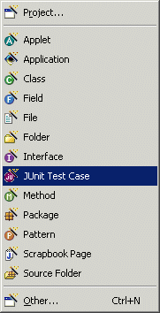
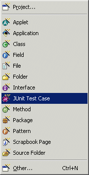

JUnit Test Case Wizard
The JUnit Test Case Wizard allows you to create new JUnit Test Cases. New Test Cases
can be created via the standard New wizard by selecting the "Java" category or
via the popup "New" menu. Test Cases can also be created by selecting the
Test Case pattern in the  Java Pattern Wizard.
Java Pattern Wizard.
In order to use the Test Case wizard, you should open your project's build path property page and add the junit.jar contained in the org.junit plugin of your Eclipse install as an external JAR. If you want to avoid absolute pathnames on the build classpath you can introduce a class path variable and reference the junit.jar relative to this variable.
The tTest Case wizard provides numerous enhancements over the simple JUnit Test case wizard provided in Eclipse 2.0 and Application Developer 5.0:
- Better control over which methods have test cases generated for them
- The ability to specify other arbitrary test cases
- Better default test code generation - automatically adds assertTrue(...) statements
- Generates test fixtures with control over:
- Test fixture field name
- Test fixture accessor creation
- Control over test fixture initialization
 

Wizard
| Option | Description | Default |
| Source folder | Enter a source folder for the new class. Either type a valid source folder path or click Browse to select a source folder via a dialog. | The source folder of the element that was selected when the wizard was started. |
| Package | Enter a package to contain the new class. Either type a valid package name or click Browse to select a package via a dialog. | The package of the element that was selected when the wizard has been started. |
| Test case name | Type a name for the new test case class. | <Test> |
| Test class | Type or click Browse to select the class to be tested. | The type or the primary type of the compilation unit that was selected when the wizard was started or <blank> |
| Superclass | Type or click Browse to
select a superclass for this class. This class must implement the junit.framework.Test
interface. |
<junit.framework.TestCase> |
| setUp() | Determines whether a setUp() method is generated | <false> |
| tearDown() | Determines whether a tearDown() method is generated | <false> |
| public static void main() | Determines whether a main() method is generated | <false> |
| Add TestRunner statements | Determines whether TestRunner statemenst are generated. Choices include "Text UI", "Swing UI" and "AWT UI". | <false> |
| Option | Description | Default |
| Create test methods for all public test class methods | Determines whether test methods for all public test class methods will be created. If turned off, specific public methods may be selected. | <false> |
| Additional test names | Click Add to enter the names of additional tests that should be created | <blank> |
| Option | Description | Default |
| Create test fixture | Determines whether a test fixture is created. A test fixture is an instance of the class to be tested. | <false> |
| Test fixture field name | Type or select the name of the field that will contain the test fixture. | <fixture> |
| Create accessors | Determines whether test fixture get and set methods are generated. | <false> |
| Lazy initialize the test fixture | Determines whether the test fixture is lazily initialized. | <false> |
| Where do you want to initialize the test fixture? | Initialize the test fixture statically, or initialize the test fixture in the setUp() method | <statically> |
| Test methods should pass by default | Determines whether tests should pass (or fail) by default. The final line of the test method will be assertTrue(true) or assertTrue(false) as appropriate. | <false> |
| Call test method in generate code | Determines whether the method being tested will be called in the generated code. Variables are created to hold the values passed to the method and a result variable captures the results (from non-void methods). If a test fixture has been created, it will be used as the method target. If not, an instance of the test class will be created in the body of the method. | <true> |